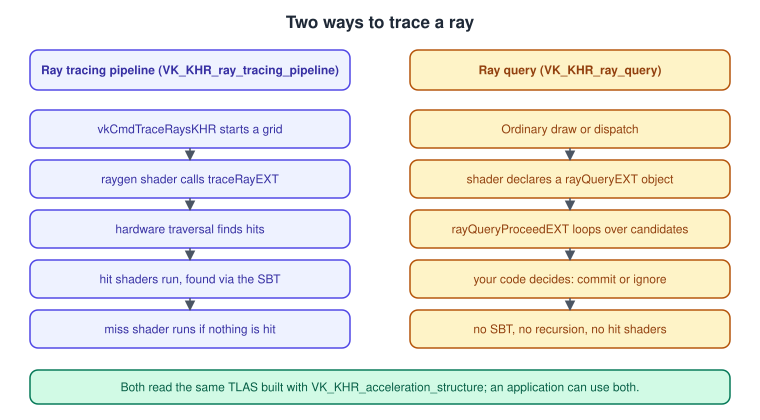
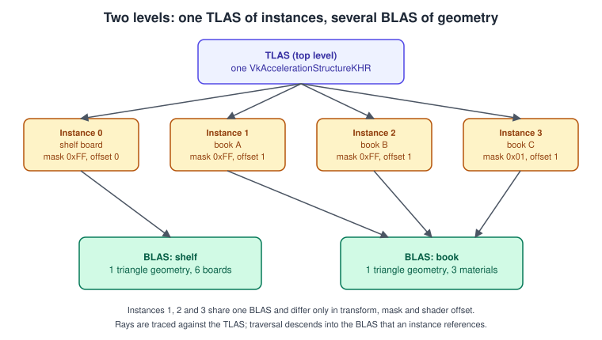
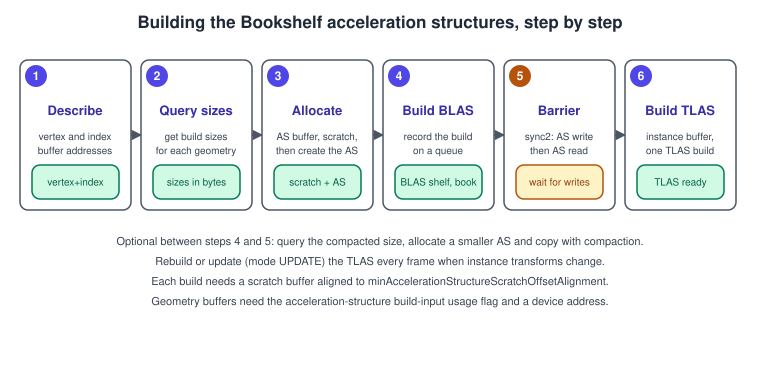
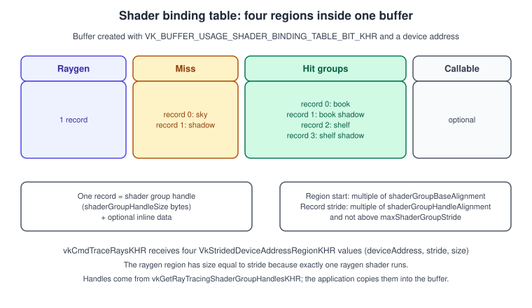
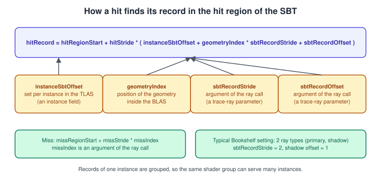

Ray Tracing in Vulkan
|
This content was generated with the assistance of AI and should be verified against the official documentation before being relied on in production. |
Ray tracing answers one question very quickly: given a ray, what is the first surface it hits? Rasterisation has to approximate shadows, reflections and ambient occlusion with extra passes and textures, while a ray can simply be shot from the shaded point towards a light and tell whether something is in the way. Vulkan exposes the dedicated ray-tracing hardware of modern GPUs through a small family of extensions. This page explains the data structure that makes tracing fast (the acceleration structure), the two ways to trace rays (a full ray tracing pipeline and inline ray queries), the shader binding table that connects geometry to shaders, and everything that goes wrong when the pieces are built or synchronised incorrectly.
The facts were checked in November 2026. The version documented is Vulkan 1.4 with headers in the 1.4.3xx series and the LunarG SDK 1.4.363.0. Ray tracing is not part of the Vulkan core in any version, including 1.4: every feature on this page is an extension that you query, enable and check at run time. The running example, the Vulkan Bookshelf (C++20, Vulkan-Hpp, VMA, Slang shaders with GLSL and HLSL alternatives), needs Vulkan 1.3 as its minimum, so ray tracing is an optional step of it: the shadow rays of the shelf and the ray-pick of the final game step. The page assumes you have read Memory: Heaps, Types and VMA, Synchronization and synchronization2 and Descriptors and Push Constants, because acceleration structures live in buffers, are built on a queue and are bound through descriptors. The same concepts on Apple hardware are in Ray Tracing in Metal, and the general idea of bounding-volume hierarchies is in Advanced Pipeline Stages.
The extensions
The Vulkan Guide splits ray tracing into a shared foundation and two ways to trace.
| Extension | What it adds | Notes |
|---|---|---|
|
The |
Required by both ways of tracing. It also depends on |
|
Five new shader stages (ray generation, intersection, any-hit, closest-hit, miss) plus callable shaders, |
Requires acceleration structures. Pipelines can be linked from libraries ( |
|
Lets any shader stage (graphics, compute, ray tracing) trace a ray inline with a |
Requires acceleration structures. Complements the pipeline extension and can be used together with it. |
|
Lets the application lend threads to expensive CPU work, such as |
Neither way of tracing needs you to use the deferral, but the extension must be enabled with the acceleration structure extension. |
|
Adds synchronisation flags such as |
Use them with synchronization2 for precise barriers on copies and on the shader binding table. |
|
Opacity micromaps: tiny per-triangle masks that let the hardware decide transparency without calling an any-hit shader. |
An optional optimisation for alpha-tested geometry; check the feature before relying on it. |
Two older names are worth recognising when you read other material. VK_NV_ray_tracing was the vendor extension that preceded the KHR
extensions and is superseded by them. A page, book or sample that talks about vkCmdTraceRaysNV predates the KHR design, so its
function names, structures and buffer rules differ from what is shown here.
Because both ways of tracing use the same top-level acceleration structure, the choice is a shader-structure choice rather than a data choice.

Enabling the features
Every ray-tracing feature is exposed through a features structure that you chain into the pNext of device creation. The device must also
expose buffer device address, which is core in Vulkan 1.2 and later but is still a feature you enable.
#include <vulkan/vulkan_raii.hpp>
struct RayTracingSupport {
bool accelerationStructure = false;
bool rayTracingPipeline = false;
bool rayQuery = false;
bool bufferDeviceAddress = false;
};
RayTracingSupport queryRayTracingSupport(vk::raii::PhysicalDevice const& physical) {
auto chain = physical.getFeatures2<
vk::PhysicalDeviceFeatures2,
vk::PhysicalDeviceVulkan12Features,
vk::PhysicalDeviceAccelerationStructureFeaturesKHR,
vk::PhysicalDeviceRayTracingPipelineFeaturesKHR,
vk::PhysicalDeviceRayQueryFeaturesKHR>();
RayTracingSupport s;
s.bufferDeviceAddress = chain.get<vk::PhysicalDeviceVulkan12Features>().bufferDeviceAddress;
s.accelerationStructure = chain.get<vk::PhysicalDeviceAccelerationStructureFeaturesKHR>().accelerationStructure;
s.rayTracingPipeline = chain.get<vk::PhysicalDeviceRayTracingPipelineFeaturesKHR>().rayTracingPipeline;
s.rayQuery = chain.get<vk::PhysicalDeviceRayQueryFeaturesKHR>().rayQuery;
return s;
}
// When creating the device, enable only what you will use.
std::vector<const char*> rayTracingDeviceExtensions(bool pipeline, bool query) {
std::vector<const char*> ext = {
VK_KHR_ACCELERATION_STRUCTURE_EXTENSION_NAME,
VK_KHR_DEFERRED_HOST_OPERATIONS_EXTENSION_NAME,
};
if (pipeline) ext.push_back(VK_KHR_RAY_TRACING_PIPELINE_EXTENSION_NAME);
if (query) ext.push_back(VK_KHR_RAY_QUERY_EXTENSION_NAME);
return ext;
}Source: Vulkan Guide: Ray Tracing
The properties that matter later are read the same way, with vk::PhysicalDeviceAccelerationStructurePropertiesKHR
(minAccelerationStructureScratchOffsetAlignment) and vk::PhysicalDeviceRayTracingPipelinePropertiesKHR (shaderGroupHandleSize,
shaderGroupBaseAlignment, shaderGroupHandleAlignment, maxShaderGroupStride, maxRayRecursionDepth). Ray tracing needs
shaders compiled to SPIR-V 1.4 or newer, which every Vulkan 1.3 device supports; compile with a target environment of Vulkan 1.2 or
newer (for example glslc --target-env=vulkan1.3).
Acceleration structures: BLAS and TLAS
Testing a ray against every triangle of a scene is hopeless, so the hardware traverses a tree of bounding volumes. Vulkan hides the
tree format (it is vendor specific and opaque) behind the VkAccelerationStructureKHR object, and asks you to describe the scene in two
levels.

-
A bottom-level acceleration structure (BLAS) contains geometry: triangles (
VK_GEOMETRY_TYPE_TRIANGLES_KHR, built from vertex and index buffers) or axis-aligned boxes for procedural shapes (VK_GEOMETRY_TYPE_AABBS_KHR, intersected by your own intersection shader). A BLAS is expensive to build, so you build it once per mesh and keep it. -
A top-level acceleration structure (TLAS) contains instances (
VK_GEOMETRY_TYPE_INSTANCES_KHR). Each instance references a BLAS and carries a transform, a mask, a shader-binding-table offset and flags. A TLAS is cheap compared to a BLAS and is typically rebuilt or updated every frame when objects move.
For the Bookshelf, the shelf is one BLAS and the book mesh another. Nine books are nine instances of the book BLAS, each with its own transform. Moving a book changes only its instance transform, not its geometry.
Describing geometry
Everything the build reads must be addressable by the GPU: vertex, index and transform data are given as device addresses, which is why
buffer device address is mandatory. Buffers used as build inputs need VK_BUFFER_USAGE_ACCELERATION_STRUCTURE_BUILD_INPUT_READ_ONLY_BIT_KHR
and VK_BUFFER_USAGE_SHADER_DEVICE_ADDRESS_BIT.
Field of VkAccelerationStructureGeometryTrianglesDataKHR |
Meaning and constraints |
|---|---|
|
Format of one position, for example |
|
Device address of the first vertex, byte distance between vertices (the full interleaved stride is allowed) and the highest vertex index used. The address alignment is that of the vertex format or its component size. |
|
|
|
Optional device address of a 3 by 4 row-major matrix applied to the geometry at build time, aligned to 16 bytes. |
Per geometry, the flags field of VkAccelerationStructureGeometryKHR can set VK_GEOMETRY_OPAQUE_BIT_KHR (never call any-hit shaders) and
VK_GEOMETRY_NO_DUPLICATE_ANY_HIT_INVOCATION_BIT_KHR. Marking opaque geometry as opaque is one of the cheapest optimisations in
ray tracing.
Build flags and what they mean
The flags of VkAccelerationStructureBuildGeometryInfoKHR trade build time, trace time, memory and flexibility. Choose them once per
structure from how it will be used.
| Flag | When to use it | Cost |
|---|---|---|
|
Static geometry traced many times, such as the shelf. |
Slower build. |
|
Geometry rebuilt every frame (a TLAS, or deforming meshes). |
Slightly slower tracing. |
|
You will refit the structure later with |
More memory and a somewhat worse tree; an update requires that the topology (primitive counts and formats) is unchanged. |
|
Static BLAS that should be shrunk after the build. |
A compaction round trip (below). |
|
Memory pressure matters more than speed. |
Slower build or trace. |
Fast-trace and fast-build are preferences, not guarantees; an implementation may treat them identically. Do not combine the two.
Building a BLAS, step by step
Building is a procedure with a strict order, shown in the storyboard.

-
Describe the geometry with device addresses and a primitive count.
-
Query sizes with
vkGetAccelerationStructureBuildSizesKHR. It returnsaccelerationStructureSize,buildScratchSizeandupdateScratchSize. The query needs only the geometry description and primitive counts, not the data. -
Allocate a buffer with
VK_BUFFER_USAGE_ACCELERATION_STRUCTURE_STORAGE_BIT_KHRfor the structure, create it withvkCreateAccelerationStructureKHR, and allocate a scratch buffer withVK_BUFFER_USAGE_STORAGE_BUFFER_BITand a device address. The scratch address must be a multiple ofminAccelerationStructureScratchOffsetAlignment. -
Build with
vkCmdBuildAccelerationStructuresKHRon a queue that supports compute. Several builds in one call have no implied order or synchronisation between them. -
Barrier: a build writes the structure, so make that write visible before it is read.
-
Build the TLAS after its BLAS references are built. A TLAS cannot be built in the same call as the BLAS structures it references.
The code below builds a BLAS from a vertex buffer and an index buffer that already exist on the GPU, using Vulkan-Hpp. It creates a device-local buffer for the structure and a scratch buffer, records the build in a one-time command buffer and waits with a fence. A real engine records builds into the frame’s command buffer, batches many BLAS builds per call and reuses one scratch buffer.
#include <vulkan/vulkan_raii.hpp>
#include <vk_mem_alloc.h>
struct Buffer {
VkBuffer handle = VK_NULL_HANDLE;
VmaAllocation allocation = nullptr;
vk::DeviceAddress address = 0;
};
Buffer createBuffer(VmaAllocator vma, vk::raii::Device const& device, vk::DeviceSize size, vk::BufferUsageFlags usage) {
vk::BufferCreateInfo bci{{}, size, usage | vk::BufferUsageFlagBits::eShaderDeviceAddress};
VkBufferCreateInfo c = bci;
VmaAllocationCreateInfo aci{};
aci.usage = VMA_MEMORY_USAGE_AUTO_PREFER_DEVICE;
Buffer b;
vmaCreateBuffer(vma, &c, &aci, &b.handle, &b.allocation, nullptr);
b.address = device.getBufferAddress(vk::BufferDeviceAddressInfo{vk::Buffer(b.handle)});
return b;
}
struct Blas {
Buffer storage;
vk::raii::AccelerationStructureKHR handle{nullptr};
vk::DeviceAddress address = 0;
};
Blas buildBlas(vk::raii::Device const& device, VmaAllocator vma, vk::raii::CommandBuffer& cmd,
vk::DeviceAddress vertexAddress, uint32_t vertexCount, vk::DeviceSize vertexStride,
vk::DeviceAddress indexAddress, uint32_t triangleCount, Buffer& scratchOut) {
// 1. Describe
vk::AccelerationStructureGeometryTrianglesDataKHR tri{};
tri.vertexFormat = vk::Format::eR32G32B32Sfloat;
tri.vertexData.deviceAddress = vertexAddress;
tri.vertexStride = vertexStride;
tri.maxVertex = vertexCount - 1;
tri.indexType = vk::IndexType::eUint32;
tri.indexData.deviceAddress = indexAddress;
vk::AccelerationStructureGeometryKHR geometry{};
geometry.geometryType = vk::GeometryTypeKHR::eTriangles;
geometry.geometry.triangles = tri;
geometry.flags = vk::GeometryFlagBitsKHR::eOpaque;
vk::AccelerationStructureBuildGeometryInfoKHR build{};
build.type = vk::AccelerationStructureTypeKHR::eBottomLevel;
build.flags = vk::BuildAccelerationStructureFlagBitsKHR::ePreferFastTrace |
vk::BuildAccelerationStructureFlagBitsKHR::eAllowCompaction;
build.mode = vk::BuildAccelerationStructureModeKHR::eBuild;
build.geometryCount = 1;
build.pGeometries = &geometry;
// 2. Query sizes
auto sizes = device.getAccelerationStructureBuildSizesKHR(
vk::AccelerationStructureBuildTypeKHR::eDevice, build, triangleCount);
// 3. Allocate and create
Blas blas;
blas.storage = createBuffer(vma, device, sizes.accelerationStructureSize,
vk::BufferUsageFlagBits::eAccelerationStructureStorageKHR);
vk::AccelerationStructureCreateInfoKHR ci{};
ci.buffer = blas.storage.handle;
ci.size = sizes.accelerationStructureSize;
ci.type = vk::AccelerationStructureTypeKHR::eBottomLevel;
blas.handle = device.createAccelerationStructureKHR(ci);
blas.address = device.getAccelerationStructureAddressKHR({*blas.handle});
scratchOut = createBuffer(vma, device, sizes.buildScratchSize, vk::BufferUsageFlagBits::eStorageBuffer);
// For a robust program, round scratchOut.address up to minAccelerationStructureScratchOffsetAlignment
// (or allocate with that alignment through VMA).
// 4. Build
build.dstAccelerationStructure = *blas.handle;
build.scratchData.deviceAddress = scratchOut.address;
vk::AccelerationStructureBuildRangeInfoKHR range{};
range.primitiveCount = triangleCount;
const vk::AccelerationStructureBuildRangeInfoKHR* pRange = ⦥
cmd.buildAccelerationStructuresKHR(build, pRange);
// 5. Barrier (synchronization2): the next build or trace must see the written structure
vk::MemoryBarrier2 barrier{
vk::PipelineStageFlagBits2::eAccelerationStructureBuildKHR,
vk::AccessFlagBits2::eAccelerationStructureWriteKHR,
vk::PipelineStageFlagBits2::eAccelerationStructureBuildKHR |
vk::PipelineStageFlagBits2::eRayTracingShaderKHR | vk::PipelineStageFlagBits2::eComputeShader |
vk::PipelineStageFlagBits2::eFragmentShader,
vk::AccessFlagBits2::eAccelerationStructureReadKHR};
vk::DependencyInfo dep{};
dep.memoryBarrierCount = 1;
dep.pMemoryBarriers = &barrier;
cmd.pipelineBarrier2(dep);
return blas;
}The recurring mistakes are small and silent until the validation layer or a driver crash reports them: a scratch buffer that is
too small or misaligned, an input buffer created without the build-input usage flag, a maxVertex smaller than the highest index,
reading the structure in a shader before the barrier, and destroying the vertex buffer while a build that reads it is still in
flight. The structure does not keep its input buffers alive; once the build finishes you may free them, but nothing else keeps them
valid until then.
Building a TLAS from instances
A TLAS is built from an array of VkAccelerationStructureInstanceKHR records stored in a GPU buffer, which you fill on the CPU every frame
or from a compute shader.
| Field | Meaning |
|---|---|
|
A |
|
Free value that shaders read as |
|
Compared with the cull mask of a ray ( |
|
First hit-group record of this instance; see the hit-group index figure below. |
|
|
|
Device address of the BLAS (from |
struct InstanceDesc {
glm::mat4 world; // column-major, as used everywhere else in the Bookshelf
vk::DeviceAddress blas;
uint32_t materialIndex;
uint8_t mask;
uint32_t sbtOffset;
};
vk::AccelerationStructureInstanceKHR makeInstance(InstanceDesc const& d) {
vk::AccelerationStructureInstanceKHR inst{};
// row-major 3x4 from a column-major 4x4: the matrix rows are the transposed columns
glm::mat4 t = glm::transpose(d.world);
std::memcpy(&inst.transform, &t, sizeof(vk::TransformMatrixKHR));
inst.instanceCustomIndex = d.materialIndex;
inst.mask = d.mask;
inst.instanceShaderBindingTableRecordOffset = d.sbtOffset;
inst.flags = static_cast<uint32_t>(vk::GeometryInstanceFlagBitsKHR::eTriangleFacingCullDisable);
inst.accelerationStructureReference = d.blas;
return inst;
}
void recordTlasBuild(vk::raii::Device const& device, vk::raii::CommandBuffer& cmd,
vk::DeviceAddress instanceBufferAddress, uint32_t instanceCount,
vk::AccelerationStructureKHR dstTlas, vk::DeviceAddress scratchAddress, bool update) {
vk::AccelerationStructureGeometryInstancesDataKHR instances{};
instances.arrayOfPointers = VK_FALSE;
instances.data.deviceAddress = instanceBufferAddress;
vk::AccelerationStructureGeometryKHR geometry{};
geometry.geometryType = vk::GeometryTypeKHR::eInstances;
geometry.geometry.instances = instances;
vk::AccelerationStructureBuildGeometryInfoKHR build{};
build.type = vk::AccelerationStructureTypeKHR::eTopLevel;
build.flags = vk::BuildAccelerationStructureFlagBitsKHR::ePreferFastBuild |
vk::BuildAccelerationStructureFlagBitsKHR::eAllowUpdate;
build.mode = update ? vk::BuildAccelerationStructureModeKHR::eUpdate
: vk::BuildAccelerationStructureModeKHR::eBuild;
build.srcAccelerationStructure = update ? dstTlas : vk::AccelerationStructureKHR{};
build.dstAccelerationStructure = dstTlas;
build.geometryCount = 1;
build.pGeometries = &geometry;
build.scratchData.deviceAddress = update ? scratchAddress /* updateScratchSize */ : scratchAddress;
vk::AccelerationStructureBuildRangeInfoKHR range{};
range.primitiveCount = instanceCount;
const vk::AccelerationStructureBuildRangeInfoKHR* pRange = ⦥
cmd.buildAccelerationStructuresKHR(build, pRange);
// The instance buffer was written by the host or by a transfer or compute pass earlier in the same
// command buffer: a barrier from that write to ACCELERATION_STRUCTURE_BUILD reads must precede this call.
}An update (VK_BUILD_ACCELERATION_STRUCTURE_MODE_UPDATE_KHR) reads the existing structure as srcAccelerationStructure, which must have
been built with ALLOW_UPDATE, and most build parameters must match the original build. It is a refit, much cheaper than a rebuild,
but a TLAS whose instances move far apart or whose count changes should be rebuilt. The scratch size of an update is the separate
updateScratchSize value from the size query.
Compaction
A BLAS is built with the memory the size query predicts, which is an upper bound. Compaction measures the real size and copies the structure into a smaller one, often saving a large share of the memory. It is worth it for static geometry such as the shelf.
-
Build with
VK_BUILD_ACCELERATION_STRUCTURE_ALLOW_COMPACTION_BIT_KHR. -
Create a query pool of type
VK_QUERY_TYPE_ACCELERATION_STRUCTURE_COMPACTED_SIZE_KHRand recordvkCmdWriteAccelerationStructuresPropertiesKHRafter a barrier following the build. -
Wait for the result on the CPU (compaction is a one-time load step, not a per-frame step).
-
Create a new structure of the compacted size and record
vkCmdCopyAccelerationStructureKHRwithVK_COPY_ACCELERATION_STRUCTURE_MODE_COMPACT_KHR. -
Free the original structure after the copy has finished and update every instance reference to the new device address.
The ray tracing pipeline
A ray tracing pipeline is a set of shaders that the hardware calls while it traverses the acceleration structure. Unlike a graphics pipeline, it has no fixed order: traversal decides at run time which shader runs.
| Shader stage | Runs when | Typical job |
|---|---|---|
Ray generation ( |
Once per launch invocation of |
Computes the ray from the pixel, calls |
Closest hit ( |
After traversal when the nearest intersection is found |
Shades the hit: reads material, traces a shadow ray. |
Any hit ( |
For every candidate intersection of non-opaque geometry |
Alpha testing: ignore the hit or accept it. |
Miss ( |
When no intersection is found |
Returns the sky colour, or marks the shadow ray as unoccluded. |
Intersection ( |
For procedural (AABB) geometry |
Custom ray-shape test, spheres or voxels. |
Callable ( |
When another shader calls |
A reusable function chosen at run time. |
Shaders are grouped into shader groups: a general group (raygen, miss or callable), a triangles hit group (closest hit with an optional any hit) and a procedural hit group (adds an intersection shader). The pipeline creation info lists the stages and the groups that refer to them.
The shader binding table
The hardware cannot call a shader by name: it needs memory containing shader-group handles. The shader binding table (SBT) is a
buffer you fill with those handles, organised in up to four regions (ray generation, miss, hit, callable). vkCmdTraceRaysKHR takes
one VkStridedDeviceAddressRegionKHR (address, stride, size) for each region.

-
The buffer needs
VK_BUFFER_USAGE_SHADER_BINDING_TABLE_BIT_KHRand a device address, and each region address must be a multiple ofshaderGroupBaseAlignment. -
A record is a group handle of
shaderGroupHandleSizebytes (commonly 32) optionally followed by inline data that the shader reads as a shader-record buffer. The stride must be a multiple ofshaderGroupHandleAlignmentand not larger thanmaxShaderGroupStride. -
The raygen region has a
sizeequal to itsstride, because exactly one raygen shader runs per dispatch. -
Handles are obtained with
vkGetRayTracingShaderGroupHandlesKHRand are valid only for the pipeline that produced them. Rebuild the table whenever the pipeline changes. -
Zero entries in a miss, hit or callable region are allowed unless the pipeline was created with a no-null flag for that stage, for example
VK_PIPELINE_CREATE_RAY_TRACING_NO_NULL_MISS_SHADERS_BIT_KHR.
How a hit finds its record
When a ray hits a triangle, the hardware computes the record of the hit group from the instance, the geometry and the arguments of the ray call:
\[ \text{ record } = \text{ hitStart } + \text{ hitStride } \times \left( \text{ instanceOffset } + \text{ geometryIndex } \times \text{ sbtStride } + \text{ sbtOffset } \right) \]
where instanceOffset is the instanceShaderBindingTableRecordOffset of the instance, geometryIndex is the position of the geometry in
its BLAS and sbtOffset and sbtStride are arguments of traceRayEXT. For a miss it is simply the start of the miss region plus the
miss stride times the missIndex argument.

The Bookshelf uses two ray types, a primary ray and a shadow ray. Each material owns two consecutive hit records, so the trace call
passes sbtStride = 2, the primary ray uses sbtOffset = 0 and the shadow ray sbtOffset = 1, with missIndex 0 for the sky and 1
for the shadow miss shader. A common mistake is to forget that the stride is an argument of the ray call and not a property of the
table: the same SBT can serve several conventions, and a mismatch shows up as the wrong material on the wrong object or as a hang.
Shaders for the Bookshelf shadow rays
The raygen shader below shoots a primary ray per pixel and the closest-hit shader traces a shadow ray towards the lamp. They are shown
in GLSL; the Bookshelf’s primary language is Slang, which compiles the same structure with [shader("raygeneration")],
[shader("closesthit")] and [shader("miss")] entry points and the TraceRay intrinsic, and HLSL with DXC works the same way with
-spirv.
// raygen.rgen
#version 460
#extension GL_EXT_ray_tracing : require
layout(set = 0, binding = 0) uniform accelerationStructureEXT topLevelAS;
layout(set = 0, binding = 1, rgba8) uniform image2D outputImage;
layout(set = 0, binding = 2) uniform Camera {
mat4 invView;
mat4 invProj;
} cam;
layout(location = 0) rayPayloadEXT vec4 payload;
void main() {
vec2 pixel = vec2(gl_LaunchIDEXT.xy) + vec2(0.5);
vec2 ndc = pixel / vec2(gl_LaunchSizeEXT.xy) * 2.0 - 1.0;
vec4 origin = cam.invView * vec4(0.0, 0.0, 0.0, 1.0);
vec4 target = cam.invProj * vec4(ndc, 1.0, 1.0);
vec4 direction = cam.invView * vec4(normalize(target.xyz / target.w), 0.0);
// flags, cullMask, sbtOffset, sbtStride, missIndex, origin, tMin, direction, tMax, payload location
traceRayEXT(topLevelAS, gl_RayFlagsOpaqueEXT, 0xFF, 0, 2, 0,
origin.xyz, 0.001, direction.xyz, 1000.0, 0);
imageStore(outputImage, ivec2(gl_LaunchIDEXT.xy), payload);
}// closesthit.rchit
#version 460
#extension GL_EXT_ray_tracing : require
layout(set = 0, binding = 0) uniform accelerationStructureEXT topLevelAS;
layout(set = 0, binding = 3) uniform Light { vec4 position; vec4 color; } lamp;
layout(location = 0) rayPayloadInEXT vec4 payload;
layout(location = 1) rayPayloadEXT float shadowed;
hitAttributeEXT vec2 barycentrics;
void main() {
vec3 worldPos = gl_WorldRayOriginEXT + gl_WorldRayDirectionEXT * gl_HitTEXT;
vec3 toLamp = lamp.position.xyz - worldPos;
float dist = length(toLamp);
vec3 L = toLamp / dist;
shadowed = 1.0; // assume occluded; the shadow miss shader clears it
traceRayEXT(topLevelAS,
gl_RayFlagsTerminateOnFirstHitEXT | gl_RayFlagsOpaqueEXT | gl_RayFlagsSkipClosestHitShaderEXT,
0xFF, 1, 2, 1, worldPos, 0.01, L, dist, 1);
float lit = 1.0 - shadowed;
payload = vec4(vec3(0.8, 0.6, 0.4) * lit * lamp.color.rgb, 1.0);
}// miss.rmiss (missIndex 0: sky)
#version 460
#extension GL_EXT_ray_tracing : require
layout(location = 0) rayPayloadInEXT vec4 payload;
void main() { payload = vec4(0.05, 0.07, 0.10, 1.0); }
// shadow.rmiss (missIndex 1: nothing blocks the lamp)
#version 460
#extension GL_EXT_ray_tracing : require
layout(location = 1) rayPayloadInEXT float shadowed;
void main() { shadowed = 0.0; }The payload is a small variable passed down the call tree; keep it small (a few floats), because it lives in per-invocation
memory that scales with the recursion depth. The pipeline’s recursion limit is maxRayRecursionDepth, and a limit of 1 is the portable
choice: the code above traces the shadow ray from a closest-hit shader, which is recursion depth 2, so it needs the limit to be at
least 2. Many applications avoid recursion altogether by returning to the raygen shader and looping there.
Creating the pipeline and the shader binding table
struct RtPipeline {
vk::raii::Pipeline pipeline{nullptr};
vk::raii::PipelineLayout layout{nullptr};
uint32_t groupCount = 0;
};
RtPipeline createRayTracingPipeline(vk::raii::Device const& device, vk::PipelineLayout layout,
vk::ShaderModule raygen, vk::ShaderModule miss, vk::ShaderModule shadowMiss,
vk::ShaderModule closestHit) {
std::array<vk::PipelineShaderStageCreateInfo, 4> stages{{
{{}, vk::ShaderStageFlagBits::eRaygenKHR, raygen, "main"},
{{}, vk::ShaderStageFlagBits::eMissKHR, miss, "main"},
{{}, vk::ShaderStageFlagBits::eMissKHR, shadowMiss, "main"},
{{}, vk::ShaderStageFlagBits::eClosestHitKHR, closestHit, "main"},
}};
auto general = [](uint32_t i) {
vk::RayTracingShaderGroupCreateInfoKHR g{};
g.type = vk::RayTracingShaderGroupTypeKHR::eGeneral;
g.generalShader = i;
g.closestHitShader = VK_SHADER_UNUSED_KHR;
g.anyHitShader = VK_SHADER_UNUSED_KHR;
g.intersectionShader = VK_SHADER_UNUSED_KHR;
return g;
};
vk::RayTracingShaderGroupCreateInfoKHR hit{};
hit.type = vk::RayTracingShaderGroupTypeKHR::eTrianglesHitGroup;
hit.generalShader = VK_SHADER_UNUSED_KHR;
hit.closestHitShader = 3;
hit.anyHitShader = VK_SHADER_UNUSED_KHR;
hit.intersectionShader = VK_SHADER_UNUSED_KHR;
// Group order defines the handle order: 0 raygen, 1 miss, 2 shadow miss, 3 hit
std::array<vk::RayTracingShaderGroupCreateInfoKHR, 4> groups{general(0), general(1), general(2), hit};
vk::RayTracingPipelineCreateInfoKHR ci{};
ci.stageCount = static_cast<uint32_t>(stages.size());
ci.pStages = stages.data();
ci.groupCount = static_cast<uint32_t>(groups.size());
ci.pGroups = groups.data();
ci.maxPipelineRayRecursionDepth = 2;
ci.layout = layout;
RtPipeline out;
out.pipeline = vk::raii::Pipeline(device, nullptr, nullptr, ci);
out.groupCount = static_cast<uint32_t>(groups.size());
return out;
}
inline uint32_t alignUp(uint32_t v, uint32_t a) { return (v + a - 1) & ~(a - 1); }
struct Sbt {
Buffer buffer;
vk::StridedDeviceAddressRegionKHR raygen{}, miss{}, hit{}, callable{};
};
Sbt createSbt(vk::raii::Device const& device, VmaAllocator vma, vk::raii::PhysicalDevice const& physical,
vk::Pipeline pipeline, uint32_t groupCount, void* (*mapAndFill)(Buffer&, size_t)) {
auto props = physical.getProperties2<vk::PhysicalDeviceProperties2,
vk::PhysicalDeviceRayTracingPipelinePropertiesKHR>();
auto rt = props.get<vk::PhysicalDeviceRayTracingPipelinePropertiesKHR>();
const uint32_t handleSize = rt.shaderGroupHandleSize;
const uint32_t handleStride = alignUp(handleSize, rt.shaderGroupHandleAlignment);
const uint32_t baseAlign = rt.shaderGroupBaseAlignment;
std::vector<uint8_t> handles(groupCount * handleSize);
// vkGetRayTracingShaderGroupHandlesKHR: all handles in group order
device.getDispatcher()->vkGetRayTracingShaderGroupHandlesKHR(
static_cast<VkDevice>(*device), static_cast<VkPipeline>(pipeline), 0, groupCount, handles.size(), handles.data());
// Regions: raygen (1 record), miss (2), hit (2: primary and shadow record); each starts at a multiple of shaderGroupBaseAlignment
const uint32_t raygenSize = alignUp(handleStride, baseAlign);
const uint32_t missSize = alignUp(2 * handleStride, baseAlign);
const uint32_t hitSize = alignUp(2 * handleStride, baseAlign);
Sbt sbt;
sbt.buffer = createBuffer(vma, device, raygenSize + missSize + hitSize,
vk::BufferUsageFlagBits::eShaderBindingTableKHR | vk::BufferUsageFlagBits::eTransferDst);
// Copy through a staging buffer or a mapped host-visible allocation (see the memory page):
auto* dst = static_cast<uint8_t*>(mapAndFill(sbt.buffer, raygenSize + missSize + hitSize));
auto put = [&](size_t offset, uint32_t group) { std::memcpy(dst + offset, handles.data() + group * handleSize, handleSize); };
put(0, 0);
put(raygenSize, 1);
put(raygenSize + handleStride, 2);
put(raygenSize + missSize, 3); // primary-ray record of the book material
put(raygenSize + missSize + handleStride, 3); // shadow-ray record (closest hit is skipped by the ray flags)
sbt.raygen = vk::StridedDeviceAddressRegionKHR{sbt.buffer.address, raygenSize, raygenSize}; // size == stride
sbt.miss = vk::StridedDeviceAddressRegionKHR{sbt.buffer.address + raygenSize, handleStride, missSize};
sbt.hit = vk::StridedDeviceAddressRegionKHR{sbt.buffer.address + raygenSize + missSize, handleStride, hitSize};
return sbt;
}
void traceFrame(vk::raii::CommandBuffer& cmd, vk::Pipeline pipeline, Sbt const& sbt, uint32_t w, uint32_t h) {
cmd.bindPipeline(vk::PipelineBindPoint::eRayTracingKHR, pipeline);
// descriptor sets (TLAS, output image, camera, light) are bound before this call
cmd.traceRaysKHR(sbt.raygen, sbt.miss, sbt.hit, sbt.callable, w, h, 1);
}Several points in this code deserve a second look. The handle size (for example 32 bytes) is smaller than the aligned stride, and the
stride and the region start use two different alignment properties; mixing them is the most common SBT bug. The group order in the
creation info decides which handle index belongs to which shader, so a refactor that reorders groups silently reassigns shaders. A
dispatch of \( w \times h \times d \) invocations must not exceed maxRayDispatchInvocationCount. If the pipeline sets the dynamic state
VK_DYNAMIC_STATE_RAY_TRACING_PIPELINE_STACK_SIZE_KHR, you must call vkCmdSetRayTracingPipelineStackSizeKHR before tracing. Tracing
can also be driven by a GPU-written parameter block with vkCmdTraceRaysIndirectKHR, whose width, height and depth are read from a
buffer.
Pipeline creation is expensive and can use the deferred host operation machinery to spread the work over several threads. For
large pipelines, build the shaders as pipeline libraries (VK_KHR_pipeline_library) and link them, so a change to one material does not
recompile everything. Cache the result through the pipeline cache described in
The Graphics Pipeline Overview.
Ray queries: tracing from any shader
A ray query runs the traversal loop inside an ordinary shader. There is no pipeline, no SBT and no recursion: the shader declares a
rayQueryEXT object, initialises it with a ray, steps through candidate intersections and reads the result. It is the simplest way to
add shadows, ambient occlusion or picking to an existing raster renderer, and it works in fragment, compute, vertex and ray-tracing
shaders.
// shadow.frag (fragment shader of the Bookshelf shelf pass)
#version 460
#extension GL_EXT_ray_query : require
layout(set = 0, binding = 0) uniform accelerationStructureEXT topLevelAS;
layout(set = 0, binding = 3) uniform Light { vec4 position; vec4 color; } lamp;
layout(location = 0) in vec3 worldPos;
layout(location = 1) in vec3 worldNormal;
layout(location = 0) out vec4 outColor;
bool occluded(vec3 origin, vec3 target) {
vec3 toTarget = target - origin;
float dist = length(toTarget);
vec3 dir = toTarget / dist;
rayQueryEXT rq;
rayQueryInitializeEXT(rq, topLevelAS,
gl_RayFlagsTerminateOnFirstHitEXT | gl_RayFlagsOpaqueEXT,
0xFF, origin, 0.01, dir, dist);
while (rayQueryProceedEXT(rq)) { } // opaque triangles are committed by the hardware
return rayQueryGetIntersectionTypeEXT(rq, true) != gl_RayQueryCommittedIntersectionNoneEXT;
}
void main() {
vec3 N = normalize(worldNormal);
vec3 L = normalize(lamp.position.xyz - worldPos);
float diffuse = max(dot(N, L), 0.0);
float visibility = occluded(worldPos + N * 0.02, lamp.position.xyz) ? 0.0 : 1.0;
outColor = vec4(vec3(0.8, 0.6, 0.4) * diffuse * visibility * lamp.color.rgb, 1.0);
}Equivalent HLSL (compiled by DXC with -spirv) or Slang code uses RayQuery<RAY_FLAG_ACCEPT_FIRST_HIT_AND_END_SEARCH>,
TraceRayInline, Proceed and CommittedStatus:
RaytracingAccelerationStructure tlas : register(t0, space0);
bool occluded(float3 origin, float3 target) {
float3 d = target - origin;
RayDesc ray;
ray.Origin = origin;
ray.Direction = normalize(d);
ray.TMin = 0.01;
ray.TMax = length(d);
RayQuery<RAY_FLAG_ACCEPT_FIRST_HIT_AND_END_SEARCH | RAY_FLAG_FORCE_OPAQUE> q;
q.TraceRayInline(tlas, 0, 0xFF, ray);
q.Proceed();
return q.CommittedStatus() == COMMITTED_TRIANGLE_HIT;
}Source: Vulkan Guide: Ray Tracing
When the geometry is not opaque, rayQueryProceedEXT returns true for each candidate triangle, and the shader decides: read the
candidate with rayQueryGetIntersectionTypeEXT(rq, false), fetch alpha, and call rayQueryConfirmIntersectionEXT(rq) to commit it.
The loop is the only place where you can run custom per-candidate logic, and it is therefore also the place where a long-running
loop stalls a whole wave.
The Bookshelf’s picking step uses the same machinery from a compute shader: cast a ray from the cursor into the TLAS and write the
instanceCustomIndex of the closest committed hit (rayQueryGetIntersectionInstanceCustomIndexEXT) into a one-element buffer that the
CPU reads back. That step is part of Bookshelf: Scene and Game.
| Question | Ray tracing pipeline | Ray query |
|---|---|---|
Needs a shader binding table |
Yes |
No |
Can recurse |
Yes, up to the pipeline limit |
No (loop in the shader instead) |
Runs from a fragment or compute shader |
No, from a dispatch of its own |
Yes |
Per-material hit shaders |
Yes, selected automatically through the SBT |
You write the dispatch logic yourself |
Hardware scheduling for incoherent rays |
Designed for it |
Depends on the implementation |
Do not read the last row as a rule: measure on the target GPUs. Ray queries are usually the right first step because they integrate with the render passes you already have.
Binding the acceleration structure
A TLAS is bound like any resource, with the descriptor type VK_DESCRIPTOR_TYPE_ACCELERATION_STRUCTURE_KHR and the write structure
VkWriteDescriptorSetAccelerationStructureKHR chained into the descriptor write. The shader stages allowed in the binding determine
who can trace: include the fragment or compute stages for ray queries.
void writeTlasDescriptor(vk::raii::Device const& device, vk::DescriptorSet set, uint32_t binding,
vk::AccelerationStructureKHR tlas) {
vk::WriteDescriptorSetAccelerationStructureKHR as{};
as.accelerationStructureCount = 1;
as.pAccelerationStructures = &tlas;
vk::WriteDescriptorSet write{};
write.dstSet = set;
write.dstBinding = binding;
write.descriptorCount = 1;
write.descriptorType = vk::DescriptorType::eAccelerationStructureKHR;
write.pNext = &as;
device.updateDescriptorSets(write, {});
}Source: Vulkan Guide: Ray Tracing
If the TLAS object is recreated (for example when the instance capacity grows), the descriptor must be rewritten. With the frames-in-flight pattern of Timeline Semaphores and Frames in Flight, keep one instance buffer and one TLAS per frame in flight, or you will rebuild a structure that the GPU is still tracing.
Synchronisation checklist
Ray tracing adds three pipeline stages and matching accesses to synchronization2.
| Situation | Source stage and access | Destination stage and access |
|---|---|---|
Instance buffer written by the host or by a copy, then used by the TLAS build |
Host or transfer write |
|
BLAS built, TLAS built or traced next |
|
|
Structure compaction copy |
Build write, then copy |
|
Shader binding table written or copied, then traced |
Transfer write |
|
Trace output image read by a later pass |
|
The consumer stage and read access, plus an image layout transition |
Ray-query reads in fragment or compute shaders use the stage of that shader with ACCELERATION_STRUCTURE_READ_BIT_KHR as the access, which is
why the barrier in the BLAS example listed the compute and fragment stages. The details of stage and access masks are in
Synchronization and synchronization2.
Opacity micromaps
Foliage, fences and book-page edges are modelled as a few triangles with an alpha-tested texture. With a plain acceleration structure,
each such candidate hit invokes an any-hit shader (or the ray-query loop), which is costly and incoherent. VK_EXT_opacity_micromap
attaches a tiny subdivision of each triangle with a state per micro-triangle: fully opaque, fully transparent, or unknown (which falls
back to the any-hit shader). The hardware resolves opaque and transparent micro-triangles itself and only calls your code where the
state is unknown. Micromaps are built with their own commands, are referenced from the triangle geometry of the BLAS, and the
acceleration structure must be built with the matching ALLOW_OPACITY_MICROMAP_UPDATE or ALLOW_DISABLE_OPACITY_MICROMAPS flags if
you want to update or disable them later. The Bookshelf does not need them (books are opaque), so treat them as an optimisation to add
after profiling shows any-hit cost, and always guard the code with the feature query.
Performance notes
-
Share BLAS structures. Instances of the same mesh share one BLAS; only the transform differs. Nine books cost one book BLAS.
-
Mark opaque geometry opaque, per geometry or per instance with
FORCE_OPAQUE, so no any-hit work is generated. -
Use masks to skip work. A shadow ray that ignores light-emitting geometry or the lamp mesh can use a different cull mask.
-
Batch builds. One call to
vkCmdBuildAccelerationStructuresKHRwith many infos is cheaper than many calls, and a single large scratch buffer can be reused across builds if you insert barriers between them. -
Update, do not rebuild, deforming BLAS, and rebuild periodically because refits degrade the tree.
-
Keep payloads small, avoid deep recursion, and keep
maxPipelineRayRecursionDepthas low as the shaders allow. -
Coherence matters. Rays that go the same way traverse the same nodes; sort or bin secondary rays when possible.
-
Count memory. Structures and scratch are large; compaction and
LOW_MEMORYare the tools, and VMA budgets (see Memory: Heaps, Types and VMA) tell you when you are close to the limit. -
Profile in the vendor tools and RenderDoc-class tools described in Debugging and Capture Tools and Multithreading and Performance.
Where the books are outdated
Neither book covers ray tracing: they were written for Vulkan 1.0, years before any ray-tracing extension existed. Several of the techniques this page relies on are also missing from them.
| Topic | VPG and VCB (Vulkan 1.0) | Today |
|---|---|---|
Ray tracing |
Not covered by either book. |
|
Device addresses for geometry and scratch |
Memory is bound to buffers and referenced by handle (VPG ch. 2 and 4, VCB ch. 4). |
Buffer device address (core since 1.2) is mandatory for builds, and it enables the pointer-style access of the SBT and of shader-record buffers. |
Barriers |
|
synchronization2 (core 1.3) with the acceleration-structure and ray-tracing stages and accesses; see the table above. |
Per-material shaders |
Graphics pipelines (VPG ch. 6 and 7, VCB ch. 8 and 9). |
One ray tracing pipeline with many hit groups selected through the SBT, or one compute shader with a ray query and a bindless material table. |
Compute dispatch for tracing |
Compute used for image processing and particles (VPG ch. 6, VCB ch. 7). |
Compute shaders can trace with ray queries in the same dispatch. |